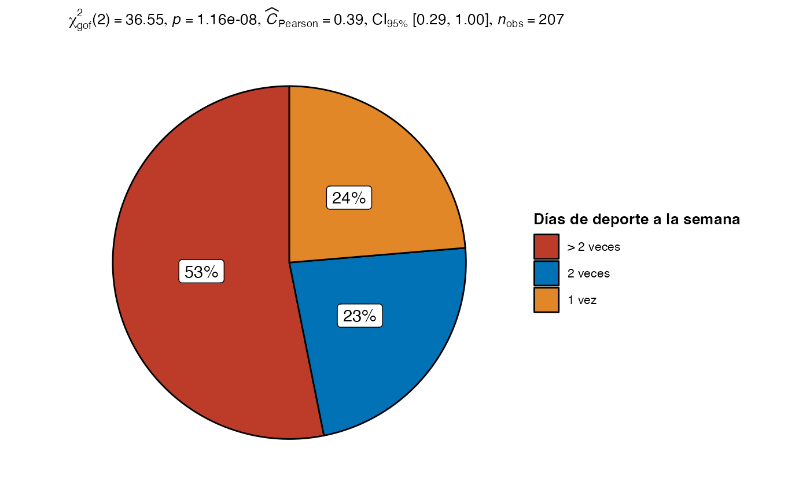

Dentro del paquete seasonalSensibility se encuentran los datos usados para el análisis exploratorio bajo el nombre de dataset. Al cargar los datos, estos se vuelven disponibles en el ambiente de trabajo.
# Si no cargamos el paquete, los datos no están disponibles
exists("dataset")
#> [1] FALSE
# Cargamos nuestro paquete
library(seasonalSensitivity)
# Esto hace que los datos queden disponibles para ser usados
exists("dataset")
#> [1] TRUEEstructura de los datos
En primera instancia podemos notar que los datos se componen de 358 filas y 18 columnas, las cuales constituyen las variables descritas en la documentación de los datos (ver documentación: seasonalSensitivity::dataset)
En relación a la estadística.
Los tamaños del efecto (i.e., effect sizes) usados para las pruebas estadísticas vienen del paquete effectsize. Puedes revisar con más detalle la interpretación de los estadísticos usados en esta guía.
Variables sociodemográficas
Las variables de interés en este caso son el sexo y la edad, en primera instancia observamos una proporción significativamente mayor de hombres que de mujeres en la muestra, \(\chi^2_{~gof}\) (1) = 5.67, p = 0.017, \(C_{~Pearson}\) = 0.13, CI95%[0.04, 1.00]. Mientras que para la variable edad observamos que esta es una variable categórica de dos niveles, agrupando a los sujetos en 18 a 35 años o mayores de 35 años, y al igual que con el género, hallamos que la proporción de sujetos de 18 a 35 años es significativamente mayor que aquellos mayores de 35 años, \(\chi^2_{~gof}\) (1) = 4.93, p = 0.026, \(C_{~Pearson}\) = 0.12, CI95%[0.03, 1.00]. Los detalles se pueden apreciar en la Tabla 1
| Característica | N = 3581 |
|---|---|
| Genero | |
| Masculino | 201 (56%) |
| Femenino | 156 (44%) |
| Desconocido | 1 |
| Edad | |
| 18-35 | 200 (56%) |
| > 35 | 158 (44%) |
|
1
n (%)
|
|
Deporte y ejercicio reportado
Para el caso del deporte, hallamos que 38 (16%) reportaron realizar deporte, mientras que 194 (84%) no, \(\chi^2_{~gof}\) (1) = 104.90, p < 0.001, \(C_{~Pearson}\) = 0.56, CI95%[0.49, 1.00]. Esto es especialmente curioso dado que si bien sólo una minoría reportó hacer deporte (n = 38), un 58% del total de la muestra (n = 207) declaró hacer ejercicio por lo menos una vez a la semana y, de estos, el 53% mencionó hacer ejercicio más de dos veces por semana (n = 110/207), mientras que una proporción homogénea declaró entrenar 1 y 2 veces a la semana (n = 49 y 48 respectivamente), la proporción entre los niveles de este factor no son homogeneos, \(\chi^2_{~gof}\) (2) = 36.55, p < 0.001, \(C_{~Pearson}\) = 0.39, CI95%[0.29, 1.00].

La duración de una sesión de ejercicio promedio reportada por el 58% de la muestra (n = 208) fue de 180 minutos (3 horas) como mediana, observando que un 50% de los aquellos que respondieron, declararon entrenar entre 1 a 5 horas (i.e., rango intercuartil), lo cual personalmente encuentro impresionante. Los detalles se pueden apreciar en la Tabla 2.
| Característica | N = 3581 |
|---|---|
| Realiza deporte | |
| Si | 194 (55%) |
| No | 159 (45%) |
| Desconocido | 5 |
| Sesiones por semana | |
| 1 vez | 49 (24%) |
| 2 veces | 48 (23%) |
| > 2 veces | 110 (53%) |
| Desconocido | 151 |
| Intensidad deporte | |
| Baja | 45 (21%) |
| Media | 129 (61%) |
| Alta | 38 (18%) |
| Desconocido | 146 |
| Duracion sesion (minutos) | 180 (60, 300) |
| Desconocido | 150 |
|
1
n (%); Mediana (RIQ)
|
|
Sensibilidad estacional
En el caso de la sensibilidad estacional nos encontramos con las variables patrón de verano (ss_patron_verano) e invierno (ss_patron_invierno), tipo de patron estacional (ss_patron_tipo), la clasificación del puntaje de estacionalidad (ss_index) y la clasificación de severidad de estacionalidad (ss_severidad). La Tabla 3 muestra los estadísticos descriptivos de estas variables.
| Característica | N = 3581 |
|---|---|
| Patron de verano | 5.0 (2.0, 7.0) |
| Patron de invierno | 2.00 (0.00, 4.00) |
| Tipo de patron | |
| Verano | 3 (0.9%) |
| Invierno | 96 (29%) |
| Mixto | 232 (70%) |
| Desconocido | 27 |
| Seasonal Score Index | |
| Normal | 86 (24%) |
| Winter blues | 55 (15%) |
| SAD | 216 (61%) |
| Desconocido | 1 |
| Severidad estacionaldiad | |
| No es problema | 42 (13%) |
| Leve | 72 (23%) |
| Moderado | 58 (18%) |
| Importante | 44 (14%) |
| Severo | 57 (18%) |
| Grave | 43 (14%) |
| Desconocido | 42 |
|
1
Mediana (RIQ); n (%)
|
|
La Tabla 3 nos muestra que para el tipo de patrón sólo 3 personas (< 1%) tienen un patrón de Verano, mientras que una proporción significativamente mayor tiene un patrón estacional Mixto por sobre uno de Invierno (70% vs 29%), \(\chi^2_{~gof}\) (1) = 56.39, p < 0.001, \(C_{~Pearson}\) = 0.38, CI95%[0.31, 1.00].
Para la clasificación del puntaje de estacionalidad (i.e., Seasonal Score Index), la mayoría de las personas calificaron con en el grupo SAD (i.e., Trastorno afectivo estacional por sus siglas en inglés), \(\chi^2_{~gof}\) (2) = 122.64, p < 0.001, \(C_{~Pearson}\) = 0.51, CI95%[0.44, 1.00], mientras que la proporción de aquellos que calificaron en el grupo Normal (para los estándares del cuestionario de evaluación de patrones estacionales, o SPAQ) fue mayor a que la de aquellos que calificaron en Winter blues (24% vs 15%), \(\chi^2_{~gof}\) (1) = 6.82, p = 0.009, \(C_{~Pearson}\) = 0.21, CI95%[0.08, 1.00].
En el caso de la clasificación de la severidad de la estacionalidad, observamos que la proporción entre los grupos no es homogénea, \(\chi^2_{~gof}\) (5) = 13.35, p = 0.02, \(C_{~Pearson}\) = 0.20, CI95%[0.06, 1.00]. Estimamos que cerca de un tercio de las personas evaluadas (32%, n = 100) tienen una estacionalidad severa o grave, mientras que sólo un 13% (n = 42) afirma que la estacionalidad no es un problema para ellos, \(\chi^2_{~gof}\) (1) = 23.69, p < 0.001, \(C_{~Pearson}\) = 0.38, CI95%[0.26, 1.00].
Bienestar de Ryff
Último en nuestra lista de variables se encuentran aquellas correspondientes al cuestionario de bienestar de Riff, en donde encontramos los dominios de Autoaceptación (riff_autoaceptacion), Relaciones positivas (riff_relaciones_positivas), Autonomía (riff_autonomia), Dominio del entorno (riff_dominio_entorno), Crecimiento personal (riff_crecimiento_personal) y Propósito en la vida (riff_proposito_vida). Para más detalle ver la Tabla 4
| Característica | N = 3581 |
|---|---|
| Autoaceptacion | 28.0 (24.0, 32.0) |
| Relaciones Positivas | 26 (21, 30) |
| Autonomia | 38 (32, 42) |
| Dominio Entorno | 25.0 (21.0, 27.0) |
| Crecimiento Personal | 34.0 (30.0, 38.0) |
| Proposito Vida | 27.0 (24.0, 30.0) |
|
1
Mediana (RIQ)
|
|